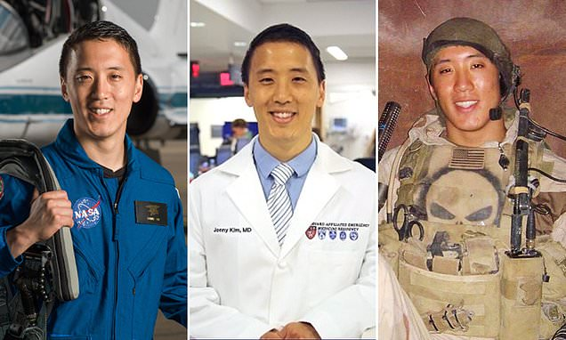

.png)
.png)
Daniel Vincent | 12 Dec, 2024
Kim's journey began with a challenging childhood. He was born to South Korean immigrants who faced numerous hardships.
His father struggled with alcoholism and was abusive, which deeply affected Kim and his family. In 2002, a tragic incident led to his father's death during a confrontation with police, a turning point that shaped Kim's resolve to protect and serve others.
After graduating from high school, Kim enlisted in the U.S. Navy as a seaman recruit. He completed the rigorous Basic Underwater Demolition/SEAL (BUD/S) training and was assigned to SEAL Team 3 in San Diego.
Kim participated in over 100 combat operations during the Iraq War, serving in various roles including medic, sniper, and navigator. His bravery earned him prestigious awards, including the Silver Star for rescuing wounded soldiers under fire.
After his military service, Kim pursued higher education. He earned a Bachelor of Arts in Mathematics, graduating summa cum laude from the University of San Diego in 2012. He then attended Harvard Medical School, where he obtained his Doctor of Medicine degree in 2016.
Following his medical training, Kim completed an internship in emergency medicine at Massachusetts General Hospital and Brigham and Women’s Hospital.
In 2017, Kim was selected as one of 12 candidates for NASA Astronaut Group 22 from a pool of over 18,000 applicants. He completed his astronaut training in 2020, which included extensive training in various disciplines such as robotics, survival training, and piloting.
Kim is scheduled to serve as a flight engineer on the Expedition 72/73 crew to the International Space Station, launching aboard the Soyuz MS-27 spacecraft in March 2025. He is also a member of NASA’s Artemis team, which aims to return humans to the Moon.
Jonny Kim is married and has three children. He credits his family for much of his success, emphasizing the importance of a strong support network.
Kim believes in the power of resilience and the ability to overcome adversity. He often reflects on his past and the lessons learned from his experiences, stating that shared hardship can unite people towards a common goal.
Jonny Kim's life is a testament to the idea that with determination and hard work, one can rise above challenges and achieve greatness in multiple fields. His story continues to inspire many, showcasing the potential for transformation and service to humanity.
Don't miss out on current news, follow my channel.
Daniel Vincent | 12 Dec, 2024
Providing insight's on topics that matters to you.